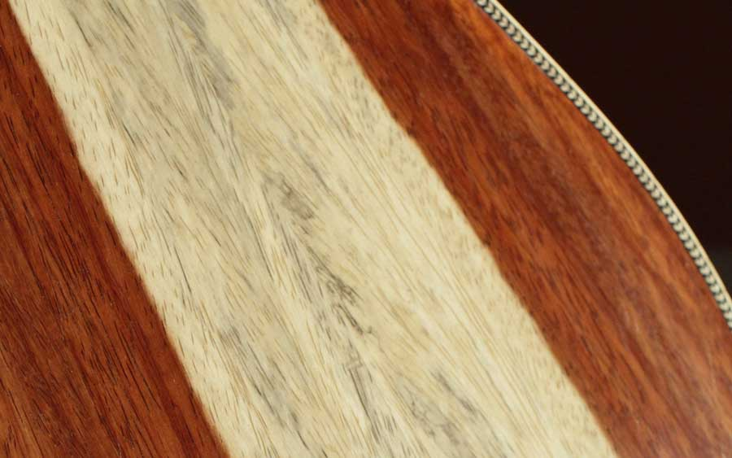

I knew the slab of Cocobolo I picked had potential. It had beautiful figure and when I tapped it it rang like a bell.
The Cocobolo jumbo guitar is nearing completion. This is a big guitar. The jumbo guitar is large but has a voluptuous curved profile which makes it easier to hold on to while um.... playing.
The Cocobolo back and sides are simply stunning. The figure is bold and deep red. It has an amazing highly figured book matched back.
The top is the coveted adirondack spruce also known as red spruce. This is the holy grail of top woods. It is very stiff. Red spruce has the highest overhead of any top wood. That means you can strum the guitar very hard and you will get great volume without distortion. This top combined with the Cocobolo and jumbo body shape should make for a loud powerful guitar with fantastic tone. I just can't wait to play it!